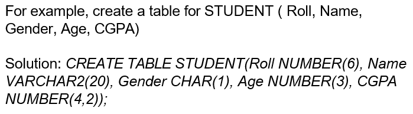

- CREATE TABLE
- Its used for table creation
- Syntax:create table table_name(column datatype, column datatype, ... column datatype);

- DESCRIBE TABLE
- Its used for viewing table structure.
- Syntax:describe table_name; OR desc table_name;

- INSERT
- Its used to insert a new row/record into table.
- Syntax:insert into table_name(column1,column2) values(value1,value2);
- Note: Column names are optional
- Numeric data is not enclosed within quotes, while character and date values are enclosed within quotes
- Entering Null values
- Implicit method : Column name is omitted from the column list in the INSERT statement
- Explicit method :Here, the NULL value is used as a value for column
- Substitution variables(Only for SQL*Plus)
- It enable us to create an interactive SQL script, which prompts you to create a value for substitution variable.
- In cmd version, "&"character is used before the substitution variable.
- In graphical version, ":"character is used.
- Substitution variables for characters and date columns are enclosed within pair of single quotes


- Visit for more : https://blogs.oracle.com/opal/sqlplus-101-substitution-variables
- TIME INSEERTION
- To insert time as value in table.
- Syntax:insert into table_name(column1) values(to_date( '12-JAN-1990 10:34:45 P.M.', 'DD-MON-YYYY HH:MI:SS P.M.'));
- Note: If time not mentioned then 12:00 A.M. is by default
- If date not mentioned then date is set to first of current month